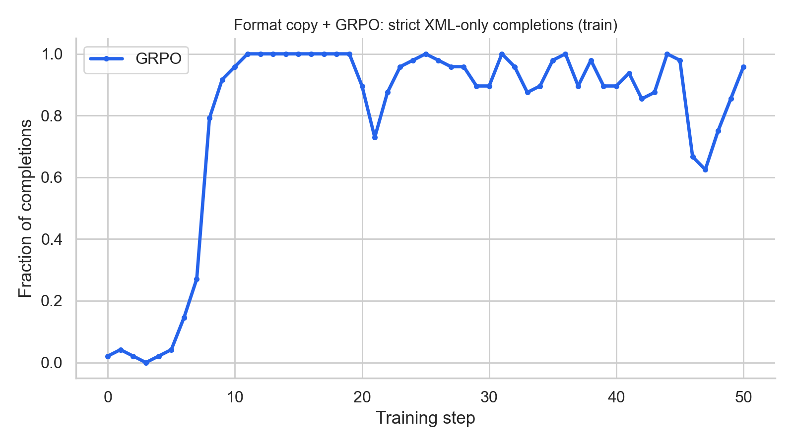
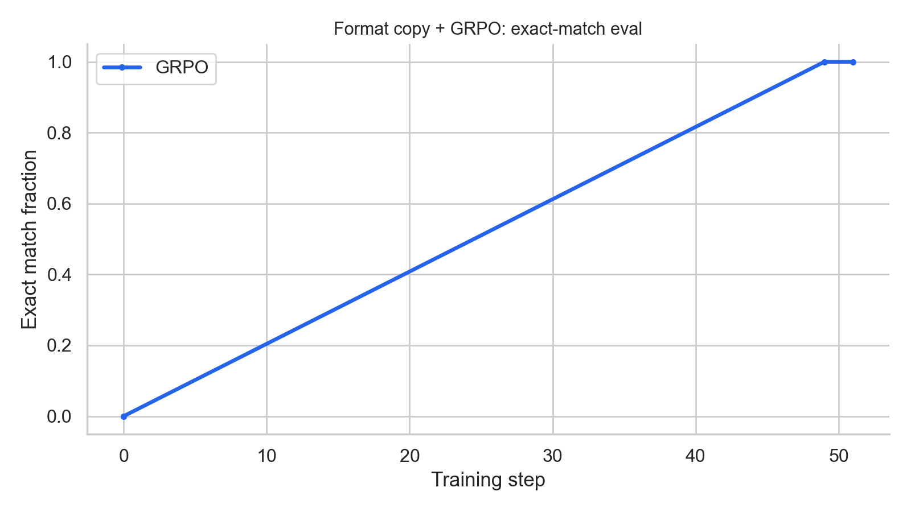
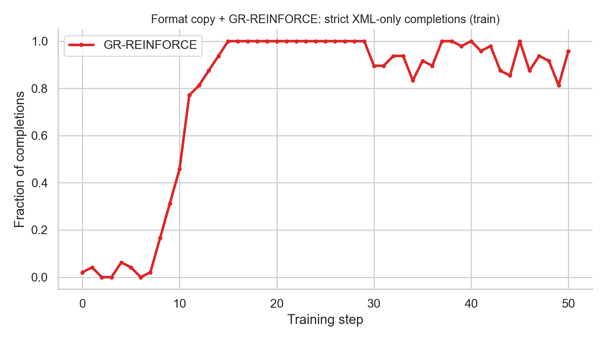
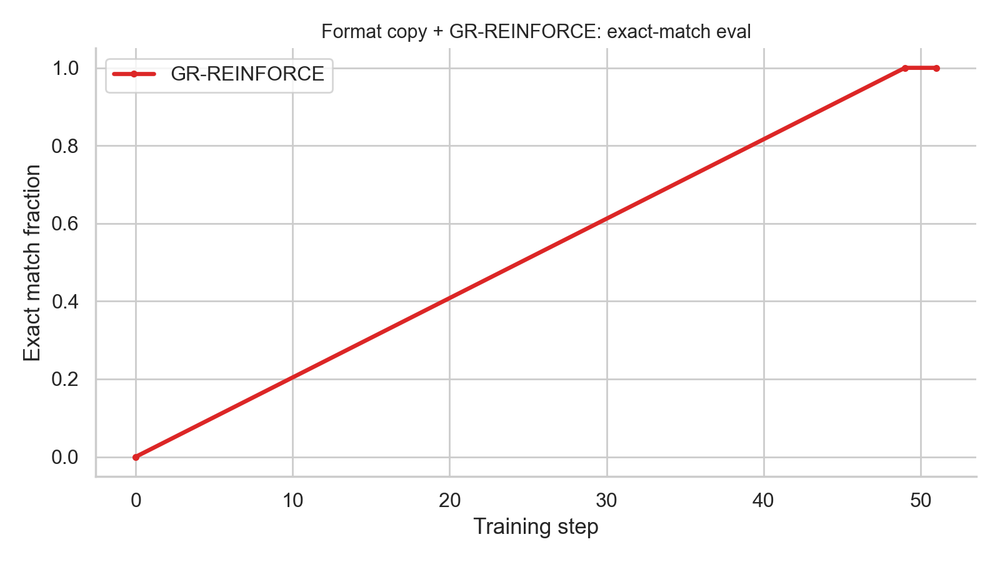
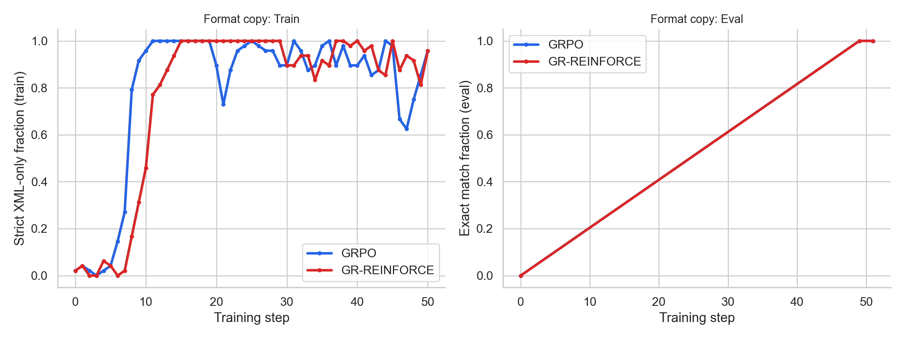
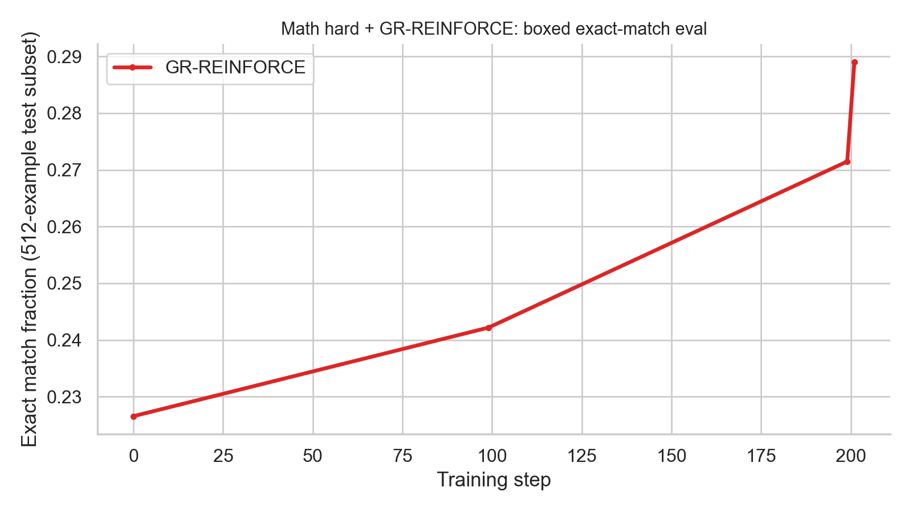
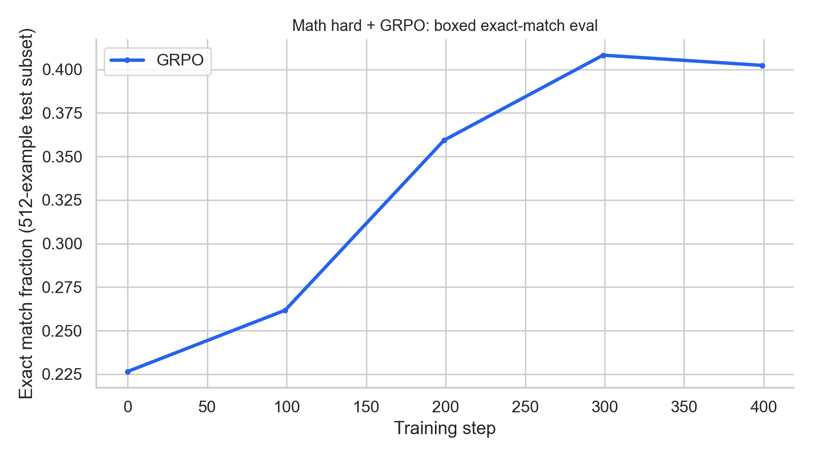
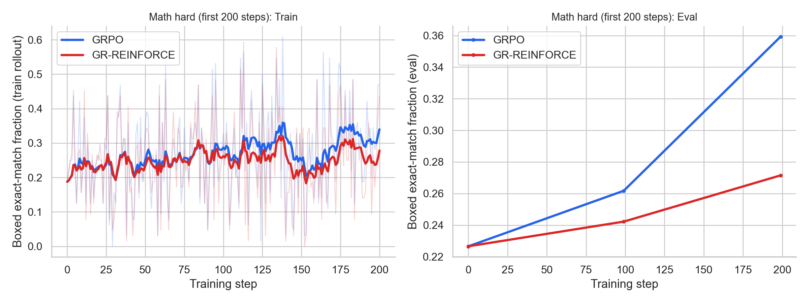

LLM Reinforcement Learning
Overview
This project implements REINFORCE and GRPO, two algorithms used for LLM reinforcement-learning post-training.
These algorithms are use to fine-tune a base language model with verifiable outcome rewards, and are compared on two tasks: a fast format_copy sanity check and the harder math_hard benchmark.
Training runs on Modal with an H100 GPU; metrics and sample generations are logged to WandB.
Objective
Modern LLM post-training often uses reinforcement learning on verifiable rewards: the model samples completions, a task-specific scorer returns a scalar reward, and the policy is updated to increase reward while staying close to a frozen reference model. For each prompt \(x\), we sample a group of \(G\) completions \(y_{i,1}, \ldots, y_{i,G}\), normalize rewards within each group to form advantages, and apply either a single-pass sequence-level REINFORCE update (GR-REINFORCE) or a clipped per-token surrogate with multiple PPO epochs (GRPO).
Architecture
The training loop follows the standard on-policy LLM-RL pattern. Each iteration:
- Sample prompts from the task (
format_copyormath_hard). - Roll out
group_sizecompletions per prompt with the current LoRA-adapted policy. - Score each completion with verifiable reward functions (XML/boxed parsing).
- Normalize rewards into group-relative advantages (and optionally global z-score).
- Update with GR-REINFORCE (one pass) or GRPO (
ppo_epochspasses with clipping).
Policy. A base causal LM (Qwen2.5-0.5B-Instruct) with LoRA adapters is the trainable policy \(\pi_\theta\). A frozen copy of the base weights serves as \(\pi_{\mathrm{ref}}\) for KL regularization. Completions are tokenized with the chat template; only generated completion tokens contribute to the policy loss.
Rollout batch. A RolloutBatch stores padded sequences, per-token
completion masks, cached behavior-policy log-probs (old_logprobs for GRPO),
reference log-probs, scalar rewards, and advantages.
RolloutBatch (flattened over batch × group)
@dataclass
class RolloutBatch:
input_ids: torch.Tensor # [N, L]
attention_mask: torch.Tensor # [N, L]
completion_mask: torch.Tensor # [N, L-1] — completion tokens only
old_logprobs: torch.Tensor # [N, L-1]
ref_logprobs: torch.Tensor # [N, L-1]
rewards: torch.Tensor # [N]
advantages: torch.Tensor # [N]Theory
Setup and notation
Let \(x\) denote a prompt and \(y = (y_1, \ldots, y_T)\) a sampled completion. The trainable policy is \(\pi_\theta\), the frozen reference is \(\pi_{\mathrm{ref}}\), and \(r(x, y)\) is a verifiable scalar reward computed from the final completion text. For each prompt \(x_i\), we sample a group of \(G\) completions; group-based normalization is used in both algorithms.
Group-relative advantages
In classic RL, an advantage quantifies how much better an action was than expected: \(A(s, a) = Q(s, a) - V(s)\). For LLM post-training we do not have a learned value function; instead, for each prompt \(x_i\) we sample a group of \(G\) completions and compare their verifiable rewards under the same prompt.
Let rewards of the \(G\) sampled completions be \(r_{i,1}, \ldots, r_{i,G}\). Group-based normalization defines
$$ A_{i,j} = \frac{r_{i,j} - \mu_i}{\sigma_i + \varepsilon}, \quad \mu_i = \frac{1}{G}\sum_{j=1}^{G} r_{i,j}, \quad \sigma_i = \sqrt{\frac{1}{G}\sum_{j=1}^{G}(r_{i,j} - \mu_i)^2}. $$
Each completion gets one scalar advantage: positive when it outperforms other samples from the same
prompt, negative when it underperforms. We use \(A_i\) in the policy loss rather than raw reward
\(r_i\) directly, because raw rewards have high variance across prompts. Optional global z-scoring
across the full batch (maybe_normalize_advantages) can additionally stabilize updates.
Approximate KL regularization
Both GR-REINFORCE and GRPO regularize the trainable policy toward a frozen reference policy \(\pi_{\mathrm{ref}}\) using KL divergence, so the trained distribution does not drift too far from the base model. At a decoding context \(s\), let \(a\) be a sampled next token and define \(\Delta(a) = \log \pi_{\mathrm{ref}}(a \mid s) - \log \pi_\theta(a \mid s)\). The exact token-level KL is
$$ \mathrm{KL}(\pi_\theta \| \pi_{\mathrm{ref}}) = \mathbb{E}_{a \sim \pi_\theta}\bigl[\log \pi_\theta(a \mid s) - \log \pi_{\mathrm{ref}}(a \mid s)\bigr]. $$This is intractable at LLM scale because it requires summing over the full vocabulary at every position. Instead, we use a sampled-token estimator averaged over completion tokens:
$$ \hat{k}(a) = e^{\Delta(a)} - \Delta(a) - 1. $$When \(a \sim \pi_\theta\), the expectation of the exponential term collapses to one:
$$ \mathbb{E}[e^{\Delta(a)}] = \sum_a \pi_\theta(a \mid s)\,\frac{\pi_{\mathrm{ref}}(a \mid s)}{\pi_\theta(a \mid s)} = \sum_a \pi_{\mathrm{ref}}(a \mid s) = 1. $$Therefore \(\mathbb{E}[\hat{k}(a)] = -\mathbb{E}[\Delta(a)] = \mathrm{KL}(\pi_\theta \| \pi_{\mathrm{ref}})\): an unbiased sampled-token estimator of the KL. Unlike the simpler proxy \(-\Delta(a)\), individual values of \(\hat{k}(a)\) are always \(\geq 0\) (with equality at agreement), so each token contributes a nonnegative divergence signal. The implementation clamps \(\Delta\) to \([-20, 20]\) before exponentiating for numerical stability.
GR-REINFORCE objective
GR-REINFORCE is an on-policy algorithm (see REINFORCE). It uses the group-normalized scalar advantage \(A_i\) per completion. For completion \(y_i = (y_{i,1}, \ldots, y_{i,T_i})\), define the sequence-average completion log-probability:
$$ \bar{\ell}_i(\theta) = \frac{1}{T_i}\sum_{t=1}^{T_i} \log \pi_\theta(y_{i,t} \mid x_i, y_{i,\lt t}) $$Averaging token log-probabilities within each completion avoids giving longer completions more weight purely because they contain more tokens. The policy-gradient term is
$$ L_{\mathrm{pg}}^{\mathrm{GR\text{-}REINFORCE}}(\theta) = -\frac{1}{N}\sum_{i=1}^{N} A_i \cdot \bar{\ell}_i(\theta). $$
The advantage \(A_i\) tells us how much better or worse completion \(y_i\) was compared to the
other completions sampled for the same prompt. The full loss adds KL regularization with coefficient
\(\beta\) (configured as kl_coef in code):
This implementation is single-pass on-policy: each collected rollout batch is used for exactly one round of optimizer steps (modulo minibatching and gradient accumulation), with no PPO importance ratio or multiple epochs.
GRPO objective
Group Relative Policy Optimization reuses a sampled rollout for multiple policy updates with PPO-style clipping. Let \(\pi_{\mathrm{old}}\) be the behavior policy that generated the rollout. For token \(t\) of completion \(i\), the importance ratio is
$$ \rho_{i,t}(\theta) = \frac{\pi_\theta(y_{i,t} \mid x_i, y_{i,\lt t})}{\pi_{\mathrm{old}}(y_{i,t} \mid x_i, y_{i,\lt t})}. $$With REINFORCE we assume data comes from the current policy. GRPO resumes samples across optimizer steps; after updating the policy, we train on data collected from a slightly different policy, so the ratio \(\rho_{i,t}\) corrects for this off-policy mismatch. Without clipping, large ratio values can cause unstable gradient updates. The clipped token objective is
$$ \min\bigl(\rho_{i,t}(\theta)\, A_i,\; \mathrm{clip}(\rho_{i,t}(\theta), 1-\epsilon, 1+\epsilon)\, A_i\bigr). $$Averaging over completion tokens within each sequence, then over the batch:
$$ L_{\mathrm{pg}}^{\mathrm{GRPO}}(\theta) = -\frac{1}{N}\sum_{i=1}^{N}\frac{1}{T_i}\sum_{t=1}^{T_i} \min\bigl(\rho_{i,t}(\theta)\, A_i,\; \mathrm{clip}(\rho_{i,t}(\theta), 1-\epsilon, 1+\epsilon)\, A_i\bigr). $$The final GRPO loss adds the same KL penalty:
$$ L^{\mathrm{GRPO}}(\theta) = L_{\mathrm{pg}}^{\mathrm{GRPO}}(\theta) + \beta\,\widehat{\mathrm{KL}}(\pi_\theta \| \pi_{\mathrm{ref}}). $$
GRPO runs ppo_epochs passes over the same rollout data, enabling
controlled sample reuse unlike strictly on-policy GR-REINFORCE.
GR-REINFORCE vs GRPO
On-policy updates vs controlled sample reuse. With GR-REINFORCE, each rollout batch is used for exactly one optimizer step. In GRPO, the same rollout batch is reused for two PPO epochs. For the same number of sampled prompts, GRPO can make more optimization progress per collected rollout batch.
Implementation
Log-probs and masking
Per-token log-probs
def compute_per_token_logprobs(model, input_ids, attention_mask, *, enable_grad=True):
out = model(input_ids=input_ids, attention_mask=attention_mask, use_cache=False)
logits = out.logits[:, :-1, :] # [B, L-1, V]
targets = input_ids[:, 1:]
B, L_minus_1, V = logits.shape
nll = F.cross_entropy(
logits.reshape(B * L_minus_1, V),
targets.reshape(B * L_minus_1),
reduction="none",
)
return (-nll).view(B, L_minus_1)
Here, we compute the log-probability of each token in the completion given the prompt. The model reads the full prompt plus completion left to right; at each step it outputs scores
for every possible next word. Logits at position \(t\) predict token \(t+1\), so we slice
logits[:, :-1] and compare against input_ids[:, 1:]. Each output entry is
\(\log \pi(\text{actual next token} \mid \text{everything before it})\). We use
cross_entropy and during rollout, enable_grad=False caches behavior and reference log-probs without building an autograd graph; during training we turn gradients back on so the policy can learn.
Completion mask (prompt tokens excluded)
def build_completion_mask(input_ids, attention_mask, prompt_input_len, pad_token_id):
valid = attention_mask[:, 1:].bool() # [B, L-1]
L = input_ids.shape[1]
target_idx = torch.arange(1, L, device=input_ids.device)
is_completion = target_idx >= prompt_input_len # broadcast over batch
return (valid & is_completion).to(dtype=input_ids.dtype)
The log-prob tensor has shape \([B, L-1]\), but we only want to train on tokens the model
generated, not the fixed prompt or padding. Index \(t\) in the log-prob array scores
token \(t+1\) in input_ids, so the first completion token (at index
prompt_input_len) corresponds to log-prob slot prompt_input_len - 1.
The mask keeps positions where the scored token is both a real token (attention_mask) and
part of the completion (target_idx >= prompt_input_len). Prompt tokens still get scored
by the forward pass, but they are zeroed out here so REINFORCE and GRPO only update on actions the
policy actually took.
Approximate KL from sampled completion tokens
def approx_kl_from_logprobs(new_logprobs, ref_logprobs, mask, log_ratio_clip=20.0):
delta = torch.clamp(ref_logprobs - new_logprobs, -log_ratio_clip, log_ratio_clip)
per_token = torch.exp(delta) - delta - 1
return masked_mean(per_token, mask)This measures how far the trainable policy has drifted from the frozen reference on the tokens we actually sampled. We cannot sum over the full vocabulary at every position, so we only evaluate the sampled tokens and average over them.
GR-REINFORCE and GRPO
GR-REINFORCE recomputes \(\log \pi_\theta\) on the current policy, averages completion-token log-probs per sequence, and forms \(pg\_loss = -\mathbb{E}[A_i \cdot \bar{\ell}_i]\).
GR-REINFORCE update (sequence-level, single pass)
new_logp = compute_per_token_logprobs(model, mb.input_ids, mb.attention_mask)
seq_logp = masked_mean_per_row(new_logp, mask)
pg_loss = -(adv * seq_logp).mean()
kl = approx_kl_from_logprobs(new_logp, mb.ref_logprobs, mask)
loss = pg_loss + cfg.kl_coef * kl
GRPO uses cached old_logprobs from the behavior policy, computes clipped
per-token objectives, averages within each completion, and loops ppo_epochs over the same
rollout. REINFORCE does not use old_logprobs.
GRPO update (PPO-style clipping, multiple epochs)
for _ in range(cfg.ppo_epochs):
for mb in iter_minibatches(rollout, cfg.minibatch_size, shuffle=True):
new_logp = compute_per_token_logprobs(model, mb.input_ids, mb.attention_mask)
log_ratio = torch.clamp(new_logp - mb.old_logprobs, -20, 20)
ratio = torch.exp(log_ratio)
adv_t = adv.unsqueeze(1)
unclipped_t = ratio * adv_t
clipped_t = torch.clamp(ratio, 1 - cfg.clip_eps, 1 + cfg.clip_eps) * adv_t
per_token_obj_t = torch.min(unclipped_t, clipped_t) * mask
seq_obj_i = masked_mean_per_row(per_token_obj_t, mask)
pg_loss = -seq_obj_i.mean()
kl = approx_kl_from_logprobs(new_logp, mb.ref_logprobs, mask)
loss = pg_loss + cfg.kl_coef * klTasks and rewards
Task 1: Format copy
An intentionally easy debugging task. The model must copy an integer into strict XML:
<answer>...</answer> with no extra text. Reward components:
- +1.0 if the parsed number exactly matches the target integer
- +0.2 if valid XML with an
<answer>tag is present - +0.1 if the completion is strict XML only
Task 2: Math hard
The main benchmark uses
the-jb/hendrycks-math
on Hugging Face. Each row has a problem, worked solution,
numeric answer, difficulty level (1–5), and subject type
(Algebra, Number Theory, etc.).
For RL training, math_hard filters to Level 5 problems whose ground-truth
answer parses as a finite number (from \boxed{...} in the solution or a direct numeric
field). Training samples from the train split; evaluation uses a deterministic
512-example subset of the test split by default. The system prompt requires a final
answer in \boxed{NUMBER} form:
System: Solve the competition-level math problem.
Return the final answer in this exact format: \boxed{NUMBER}
Do not output XML, ####, or extra prose.
Output only the boxed final answer.
User: <problem text>
Return only: \boxed{NUMBER}Reward components
- +1.0 if the boxed-answer parser extracts the correct number
- +0.1 if the completion contains
\boxed{} - +0.1 if a relaxed last-number parser is correct but the boxed parser is not
Maximum total reward is 1.2. Shaping rewards beyond exact correctness help exploration early in training when the base model rarely emits well-formed boxed answers.
Example problems (Level 5)
Three rows from the dataset. The model must solve the problem and return
\boxed{NUMBER} with the correct value.
Example 1 · Algebra · Level 5 · answer: 192
If \(f(3)=1\) and \(f(2x)=2f(x)\) for all \(x\), find \(f^{-1}(64)\).
Example 2 · Algebra · Level 5 · answer: 10
Let \[ f(x) = \begin{cases} 3x^2 + 2 & \text{if } x \le 3, \\ ax - 1 & \text{if } x > 3. \end{cases} \] Find \(a\) if the graph of \(y=f(x)\) is continuous.
Example 3 · Algebra · Level 5 · answer: 9
The roots of the equation \(x^2+kx+5 = 0\) differ by \(\sqrt{61}\). Find the greatest possible value of \(k\).
Training results
I trained both algorithms on each task using Modal on an H100. Starting with
format_copy before the more challenging
math_hard task.
Format copy + GRPO
Training for 51 steps with a batch size of 8, group size of 6, and 2 PPO epochs. Both the training fraction of exact completions and the eval exact match rate reach ~1.0

Training reward — format_copy + GRPO

Eval exact match — format_copy + GRPO
Format copy + GR-REINFORCE
Same rollout settings as the GRPO run above, but single-pass on-policy (no ppo_epochs).
Like GRPO, the training fraction of exact completions and the eval exact match rate reach ~1.0

Training reward — format_copy + GR-REINFORCE

Eval exact match — format_copy + GR-REINFORCE

GRPO vs GR-REINFORCE on format_copy (reward and eval)
Math hard + GR-REINFORCE
GR-REINFORCE is trained for 201 steps, using a batch size of 8, and a group size of 8. The final eval boxed exact match reached roughly \(\geq 0.29\) (baseline ~0.23 before RL).

Eval boxed exact match — math_hard + GR-REINFORCE (201 steps)
Math hard + GRPO
GRPO is trained longer with 501 steps and 2 PPO epochs per rollout. Over the first 200 iterations, GRPO learns more sample-efficiently than GR-REINFORCE by reusing each batch for two clipped optimization passes. The final eval boxed exact match reached roughly \(\geq 0.40\).

Eval boxed exact match — math_hard + GRPO (501 steps)

GR-REINFORCE vs GRPO on math_hard (first 200 steps aligned)
Example generations
Logged WandB rollout samples from math_hard + GRPO (group size 8). Each row shows the
parsed boxed answer, total reward, and group-normalized advantage used for the policy update.
The four positive integers \(a,\) \(b,\) \(c,\) \(d\) satisfy \(a \times b \times c \times d = 10!\). Find the smallest possible value of \(a + b + c + d.\)
Completion (excerpt)
The four positive integers \(a,\) \(b,\) \(c,\) \(d\) satisfy \(a \times b \times c \times d = 10!\). Find the smallest possible value of \(a + b + c + d.\)
Completion (excerpt)
The model emits well-formed \(\boxed{}\) output but gets the factorization wrong. Therefore, only the +0.1 format-shaping reward applies, and the negative advantage down-weights this completion.
Let \(P\) be a point inside triangle \(ABC\). Let \(G_1\), \(G_2\), and \(G_3\) be the centroids of triangles \(PBC\), \(PCA\), and \(PAB\), respectively. If the area of triangle \(ABC\) is 18, find the area of triangle \(G_1 G_2 G_3\).
Completion (excerpt)
The four positive integers \(a,\) \(b,\) \(c,\) \(d\) satisfy \(a \times b \times c \times d = 10!\). Find the smallest possible value of \(a + b + c + d.\)
Completion (excerpt)
The completion starts with Python pseudocode but never outputs \(\boxed{NUMBER}\), earning zero reward.